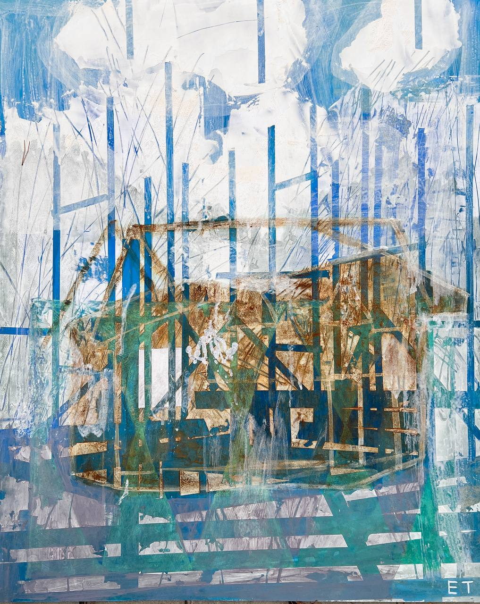
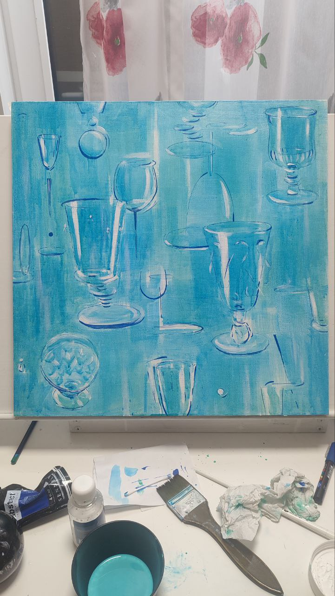

Арт-резиденция ВзаимоДействие
Сентябрь 2025 — «Само…»
Осенняя резиденция в Спирино
О резиденции
«Само(…)» — это не одно слово, а целый корень. Самоощущение. Самость. Самоизоляция. Самодостаточность. Самоконтроль. Самомнение…
Что происходит, когда внешний шум замирает?
Кто я, когда остаюсь один/одна?
Где проходят мои границы, и где я начинаю собираться заново?
Елена Тарутина (Москва)

Проект «Спирино. Дух места. Баланс внутреннего и внешнего», 2025
Оргалит 80×60 см, акрил, смешанная техника
В работе этой соединилось два вектора поиска и ощущений. Первым было погружение в среду, в дух места — это то, что меня всегда волнует в любых поездках и местах: почувствовать их изнутри, найти важные черты, характер, голос. И листы с быстрыми эскизами / словами / наблюдениями (покажу потом отдельно). То, что потом перешло в большие работы.
Второй линией, которая переплетается с первой, была заданная тема резиденции — слово «Само(…)», как корень и начало многих других разных слов. Самоощущение, самость, самоизоляция, самодостаточность… Мой ряд, давно проросший в жизни: самоисцеление, самоорганизация, самосозидание, самоосознание…
Искали вместе (и каждый внутри себя) ответы на вопросы:
Что происходит, когда внешний шум замирает?
Кто я, когда остаюсь один/одна?
Где проходят мои границы, и где я начинаю собираться заново?
У меня уже получается целый цикл работ (начиная с «Тайного сада»), сделанный на пересечении Мест и Состояний. Мест, в которые я уезжала одна — восстанавливаться и быть в тишине; и состояний — пересборки и возвращения себе себя, необходимости найти внутренний контакт и новую точку движения.
И вот здесь, в этом найденном объекте/конструкции, для меня соединились и пластика, и эти смыслы — разрушенное (недостроенное?) вроде бы состояние, но оно же и потенциал для развития, для переизобретения, для самосозидания. Нравится, когда в визуально будоражащем есть и то, что волнует в целом, в других срезах бытия. Такое соединение разных частей себя получается.
Графические листы про реку Обь, созерцание на берегу и впечатление от соединений воды, песка, сухих трав, найденных деревяшек, обломков, звуков и ветра.
Карина Нуриева (Санкт-Петербург)

Серия «САМО», 2025
Размеры каждой части: 59,4×42 см
Материалы: бумага, гуашь, акрил, пастель
Техника: смешанная
Серия «САМО» — это визуальный цикл о движении внутрь себя. Каждая работа раскрывает этап внутреннего пути, где границы тела становятся прозрачными, а пространство вокруг откликается состоянию героини.
В центре — идея самопознания как живого процесса: от первичного ощущения своего присутствия — к осознанию, принятию и целостности. В этой серии стеклянная фигура становится метафорой хрупкости и прозрачности человеческой природы, а лес — образом внутреннего мира, где всё постоянно изменяется, растёт и исцеляется.
1. «Самоощущение»
Фигура начинает видеть себя в отражениях мира. Лес будто становится проводником: его формы
прорастают сквозь прозрачное тело, превращаясь в новые смыслы. Это состояние внутреннего узнавания —
когда границы между собой и пространством стираются, и ты начинаешь чувствовать себя частью целого.
2. «Самосознание»
На границе двух миров фигура делает первый шаг навстречу неизвестному. Её тело из стекла уже наполнено светом.
Это момент первичного контакта с собой: когда реальность и внутренний мир соприкасаются. Здесь нет прошлого и будущего,
есть ощущение дыхания и движения в глубину.
3. «Самоисцеление»
Материя тела постепенно соединяется с живым: стекло гармонично сливается с живой природой и светом.
Это точка покоя — момент, когда внутренние противоположности перестают бороться, становясь единым дыханием.
Самоисцеление — мягкое возвращение к себе, к естественной целостности.
Ирина Анохина (Новосибирск)

Само-истязание / Само-удовлетворение / Само-внушение / Само-достаточность, 2025
Холст 50×50, 60×40, 30×30, акрил, акриловый маркер, масляная пастель, бокал
1. «Само-истязание»
Есть в этом — не только рана, но и наслаждение от неё. Причинять себе боль и упиваться ею:
действие кажется «своим», но кто-то шепчет из тени — память, привычка, чужая требовательность.
Я показываю повторяющийся ритм бокалов — как систему, где каждый из них одновременно и удовольствие, и последствие.
Своими руками — но своими ли мыслями? Кому на самом деле принадлежит роль тирана?
2. «Само-удовлетворение»
Вино — удовольствие, в котором сплетаются грех и божественное. Семейная тема, из которой не вырваться.
Эта работа — часть проекта о «само», где внутренние фигуры управляют нашими желаниями, а мы ищем оттенки
в языковых бинарностях.